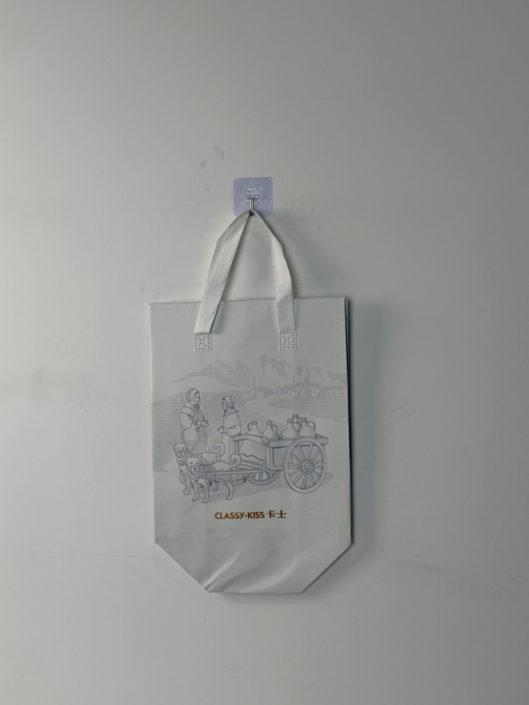

An elegant grey insulated tote designed for Classy Kiss, featuring a European pastoral engraving illustration that communicates artisanal dairy heritage and premium cold-chain reliability.

Classy Kiss is a premium Chinese yogurt brand positioned at the intersection of European dairy tradition and modern health-conscious lifestyles. Unlike mass-market yogurt competitors, Classy Kiss targets urban middle-class consumers who prioritize probiotic quality, clean ingredients, and brand storytelling. The brand's visual identity deliberately evokes European artisanal dairies — a positioning strategy that differentiates it in a market saturated with domestic and international mass-market alternatives.
Our customers aren't just buying yogurt. They're buying a European dairy experience. Every touchpoint — including the bag — needs to feel like it came from a farmhouse in Provence or Bavaria.
The packaging project addressed a specific gap in the premium yogurt delivery experience. While competitors shipped in generic courier bags or simple plastic totes, Classy Kiss needed a carrier that extended the brand's pastoral narrative into the customer's home — transforming a routine grocery delivery into an artisanal unboxing moment.
The creative direction draws from 19th-century European dairy engravings — the kind of illustrations found on traditional cheese labels and artisanal food packaging. The scene depicts a pastoral moment: figures with dairy vessels beside a dog-drawn cart, rendered in fine-line engraving style. This illustration strategy communicates authenticity, tradition, and craftsmanship without requiring a single word of explanation.
Fine-line pastoral scene evokes 19th-century dairy tradition and artisanal craftsmanship heritage.
Soft grey base communicates understated elegance and premium positioning without visual aggression.
"CLASSY·KISS 卡士" combines international aspiration with domestic accessibility in elegant gold-brown typography.
Enhanced foam layer maintains yogurt at safe temperatures during extended summer delivery windows.
Premium dairy delivery requires more stringent cold-chain maintenance than standard food delivery. Yogurt cultures begin degrading above 8°C, making thermal performance critical. The Classy Kiss tote was engineered with thicker insulation and reflective barriers specifically for probiotic product protection.
| Parameter | Specification | Test Standard |
|---|---|---|
| Cold Retention | < 8°C for 2 hours (30°C ambient) | Internal Protocol |
| Load Capacity | 4 kg | ASTM D5265 |
| Print Detail | 0.3mm line weight resolution | Internal Protocol |
| Seam Strength | > 25 N/cm | ASTM D1683 |
The engraving-style illustration demanded production precision uncommon in standard bag manufacturing. Fine-line detail at 0.3mm weight requires mesh selection, ink viscosity, and squeegee pressure calibrated specifically for non-woven substrates.
100gsm non-woven PP with grey masterbatch extrusion. Surface tension treated for optimal ink adhesion.
90T mesh screen with low-viscosity grey plastisol. Squeegee angle at 65 degrees for fine-line detail reproduction.
18-micron matte BOPP film laminated for premium surface feel. Matte finish enhances engraving illustration legibility.
4mm EPE foam bonded to aluminum-PE barrier. Heat-compression at 3.5kg/cm for uniform insulation without delamination.
Ultrasonic die-cutting with sealed edges. 100% magnification inspection of engraving line clarity. Thermal probe sampling.
The heritage tote was deployed across Classy Kiss's e-commerce and subscription delivery channels in tier-1 and tier-2 cities. The rollout targeted premium yogurt subscribers who received weekly deliveries and were most sensitive to packaging quality.
Key Insight: Customer feedback consistently referenced the "European feeling" of the bag as reinforcing their purchase decision. The engraving illustration functioned as a visual proof of the brand's artisanal positioning — a non-verbal argument for premium pricing that customers accepted without questioning.
The bag's understated aesthetic proved particularly effective in office delivery contexts. Unlike brightly colored competitor packaging that drew unwanted attention in professional environments, the muted grey tote allowed customers to carry yogurt deliveries discreetly — a subtle but significant factor in repeat subscription behavior.
Three design decisions differentiate this premium dairy tote from standard yogurt packaging. Each leverages specific psychological mechanisms in China's health-conscious middle-class market.
Engraving-style illustrations carry cultural associations with traditional craftsmanship and established heritage. In a market where "European import" commands premium pricing, the visual language of 19th-century dairy farms provides implicit authenticity certification.
Most food delivery packaging uses bright primary colors for visibility. The deliberate choice of muted grey signals that this product is not competing on shelf impact — it's confident enough in its quality to whisper rather than shout.
Yogurt cultures are more temperature-sensitive than most food products. The 4mm foam layer — thicker than standard 2-3mm delivery bags — extends safe transport time by 35 minutes, covering edge-case delivery scenarios in congested urban areas.
We engineer insulated delivery bags for premium dairy, yogurt, and probiotic brands. From heritage illustration to cold-chain compliance, we deliver packaging that justifies premium positioning.